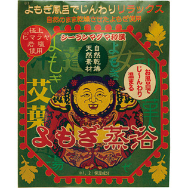

返回列表
产品名称：マグマ風呂 和漢 よもぎ蒸浴

シーラン マグマ風呂 和漢 よもぎ蒸浴 ３０Ｇ
メーカー シーラン
JANコード 4547073510075
商品の特徴
よもぎ※1風呂でじんわりリラックス
自然のまま乾燥させたよもぎ使用
極上ヒマラヤ岩塩※2使用
自然乾燥 天然素材
お風呂でじ～んわり温まる
※1、2：保湿成分
成分・分量
＜成分＞
ミネラル塩（マグマ塩）、ヨモギ葉
用法及び用量
1袋（30ｇ）をご家庭の浴槽（150～200ｍｌ）に入れよくかき混ぜてご使用下さい。
ミネラルの吸収は40度位のぬるま湯でゆっくり浸かるとより活性化されます。
岩塩は給湯中にいれてもかまいません。ぬるめのお湯にゆっくり入ることをおすすめ致します。